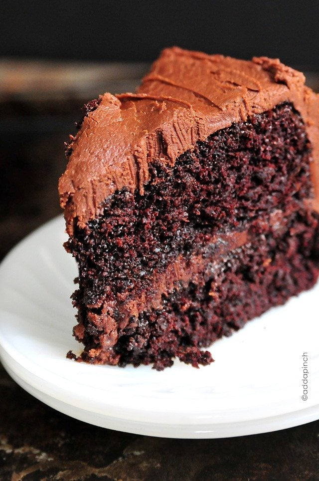

Chocolate Cake
How much do you want to bet that this is the best chocolate cake recipe to every exist? One bite of this tasty moist cake with decadent frosting and you'll agree that it's the best cake you've ever tasted.
Apart from the undeniably delicious taste, this cakes no time to make with the most basic ingredients which you probably already have in your pantry. It also doesn't require the use of a heavy-duty mixer either; this can easily be done with just a whisk and a bowl. While dinner is simmering on the stovetop, you can quickly whip this up and serve a dessert that will leave person speechless!
WHAT YOU NEED TO MAKE THIS RECIPE

Ingredients
- 2 cups all-purpose flour
- 2 cups sugar
- 3/4 cup unsweetened cocoa powder
- 2 teaspoons baking powder
- 1 1/2 teaspoons baking soda
- 1 teaspoon kosher salt
- 1 teaspoon espresso powder
- 1 cup milk
- 1/2 cup vegetable oil
- 2 large eggs
- 2 teaspoons vanilla extract
- 1 cup boiling water
- Chocolate Buttercream
Steps
- Preheat oven to 350F. Prepare two 9-inch cake pans by spraying with baking spray or buttering and lightly flouring.
- Add flour, sugar, coca, baking powder, baking soda, salt and espresso powder to a large bowl or the bowl of a stand mixer. Whisk through to combine or, using your paddle attachment, stir through flour mixture until well combined.
- Add milk, vegetable oil, eggs and vanilla to flour mixture and mix together on medium speed until well combined. Reduce speed and carefully add boiling water to the cake batter until well combined.
- Distribute the cake batter evenly between the two prepared cake pans. Bake for 30-35 minutes, until a toothpick or cake tester inserted in the center of the chocolate cake comes out clean.
- Remove from oven and allow to cool for about 10 minutes, remove from the pan and cool completely.
- Frost the cake with Chocolate Buttercream Frosting and enjoy!